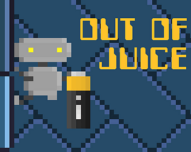
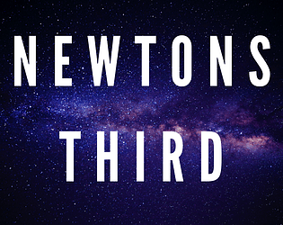
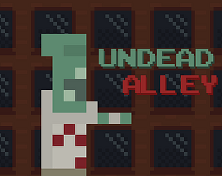
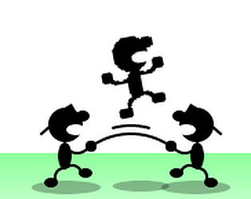

Showcase

Out of Juice
This is the game I am currently the most proud of. As the game jam's theme was "keep it alive", my team decided to "keep the battery alive". This game turned out to be a pretty difficult puzzle-platformer, akin to Super Meat Boy and Celeste.
This is the game I am currently the most proud of. As the game jam's theme was "keep it alive", my team decided to "keep the battery alive". This game turned out to be a pretty difficult puzzle-platformer, akin to Super Meat Boy and Celeste.
Game Jams
Ludum Dare 46: Keep It Alive
MajorJam: Isolation
Ludum Dare 45: Start With Nothing
Ludum Dare 46: Keep It Alive
Out of Juice
I worked on this game as part of a three man team in a 72 hour timeframe. I worked on the movement mechanics, level screen system, level design (red levels), and some character animation.
I worked on this game as part of a three man team in a 72 hour timeframe. I worked on the movement mechanics, level screen system, level design (red levels), and some character animation.
MajorJam: Isolation

Newtons Third
This was another team effort, with two people this time and completed in a week. I worked on the physics system/locomotion, puzzle systems and the music.
This was another team effort, with two people this time and completed in a week. I worked on the physics system/locomotion, puzzle systems and the music.
Ludum Dare 45: Start With Nothing

Undead Alley
I worked alone for this game jam, again over 72 hours. I produced all the assets and systems.
I worked alone for this game jam, again over 72 hours. I produced all the assets and systems.
Student Projects

FireHD
This was a student project for the first year class "Introduction to Programming". As part of the design brief, we were to create all assets ourselves through scripted shapes.
This was a student project for the first year class "Introduction to Programming". As part of the design brief, we were to create all assets ourselves through scripted shapes.